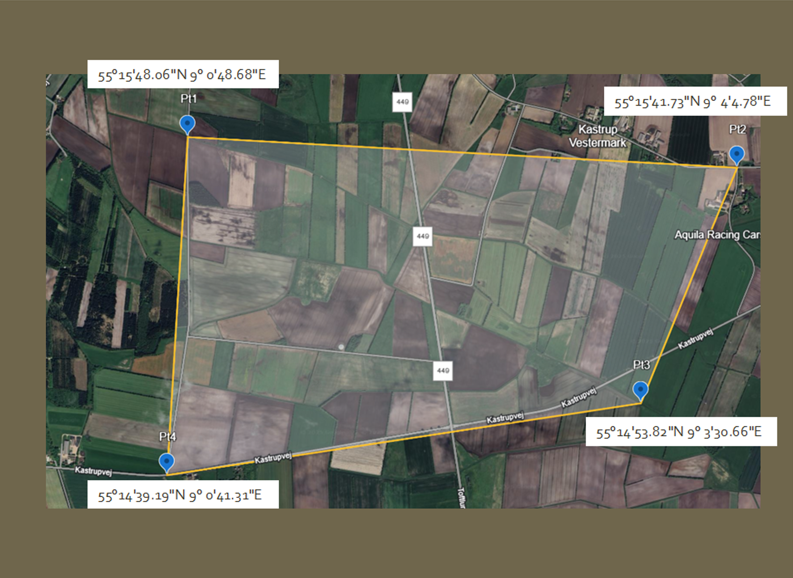
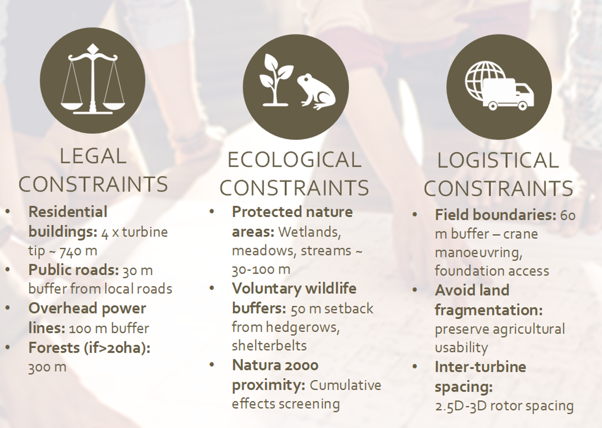
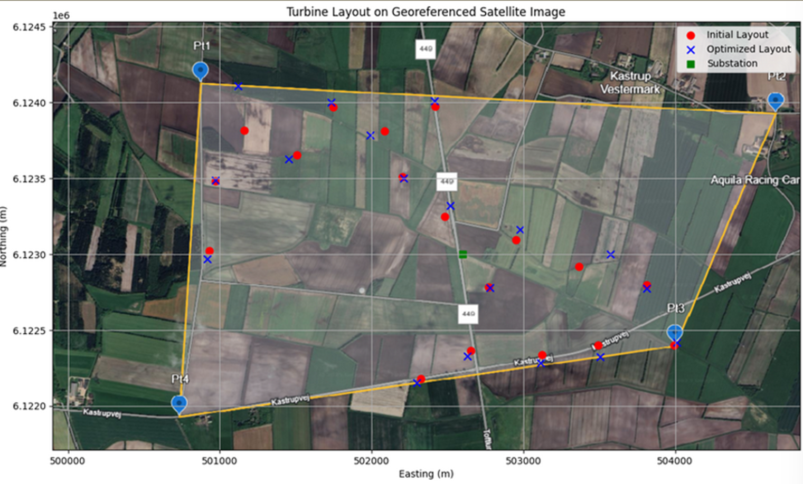
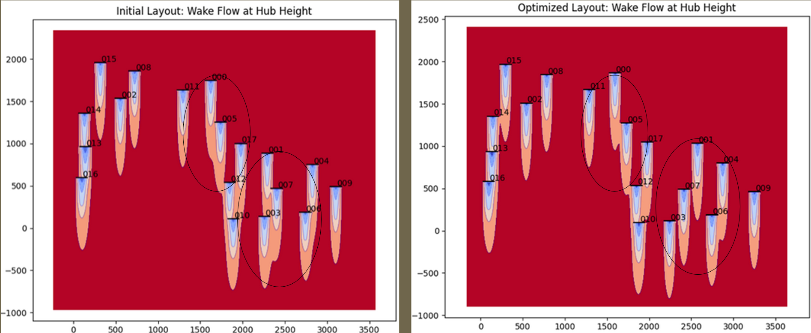
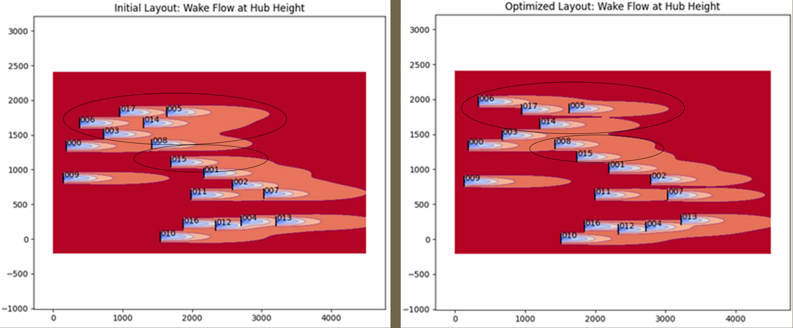

Case study · Wake modelling & BOS · TUM
Wind-farm wake & layout optimisation.
FLORIS wake-model-driven layout with LandBOSSE balance-of-system costing — AEP, LCOE, and logistics evaluated together rather than as decoupled stages.

Problem
A candidate wind-farm site had to be evaluated end-to-end: turbine selection, micro-siting within a bounded lease area, wake-loss-aware power estimation, and balance-of-system (BOS) cost — which for real farms is half the capital stack, not an afterthought. The challenge was that the optimisation trades were non-obvious: a layout with lower wake loss might require longer inter-array cabling or more expensive foundations, and nothing in the problem statement told you the winner a priori.
Approach
- Site definition — defined the project boundary as a quadrilateral polygon with four corner coordinates (WGS84) covering ~9 km² of agricultural land in southern Jutland, Denmark.
- Constraint screening — applied legal buffers (740m residential setback, 30m road buffer, 100m power line buffer, 300m forest buffer), ecological buffers (30-100m from wetlands/meadows/streams, 50m voluntary wildlife buffer), and logistical buffers (60m from field boundaries for crane access).
- Buildable area — intersected the site boundary with all constraint buffers to identify the final usable area for turbine placement. Less than one-fifth of the total site remained after all exclusions.
- Resource assessment — built a site wind rose from reanalysis data; fit Weibull distributions per sector. Dominant wind directions: North (0°) and West (270%), ~29% of total occurrences, with scale parameters 9-11.7 m/s.
- Turbine selection — selected IEA 3.4 MW reference turbine (130m rotor, 120m hub height) based on specific power (256 W/m²), logistics (65m blades transportable on Danish roads), and cost efficiency (16-25% cheaper per MW than larger options).
- Wake modelling in FLORIS — NREL's FLORIS framework with Gaussian wake model. Swept turbine counts (14-18 turbines) for 45-60 MW target capacity.
- Layout optimisation — FLORIS's layout-optimisation routines within the lease boundary with minimum-spacing constraints (5D prevailing, 3D cross-wind). Compared structured grid, staggered, and FLORIS-optimised free layouts.
- BOS costing in LandBOSSE — NREL's LandBOSSE model for civil works, erection, collection-system cabling, and grid interconnection. Each candidate layout costed against the same turbine and site conditions.
- LCOE close — AEP (from FLORIS with wake losses and availability) divided through lifetime cost (LandBOSSE + assumed O&M and turbine CapEx) to give a defensible LCOE ranking.







Tools & setup
- FLORIS (NREL) — engineering wake models, layout and yaw optimisation; the industry reference for wake-loss-aware plant design.
- LandBOSSE (NREL) — balance-of-system cost model spanning civil, erection, collection, management, and grid interconnection.
- Python — driver scripts stitching resource → FLORIS → LandBOSSE → LCOE in one pipeline, with pandas DataFrames passing results between stages.
- Matplotlib — wake-field plots, AEP-by-sector charts, and the final cost-vs-AEP scatter used for layout selection.
Outcomes
- Turbine choice justified on the data — the chosen rotor diameter and hub height maximised AEP per installed MW given the site's Weibull scale and turbulence class; swapping to a larger rotor was rejected on BOS (foundation and crane) grounds even though it improved wake-free AEP.
- Wake-aware layout — the staggered, prevailing-wind-aligned layout beat the simple grid by a meaningful AEP margin while only slightly increasing collection cabling, so it won on LCOE.
- Ranking by LCOE, not by wake-loss alone — the defining methodological choice. Two layouts with similar wake losses had materially different BOS costs, and that is what the ranking surfaced.
Headline takeaway: the "best" layout from a pure wake-loss perspective was not the best on LCOE. Cable length and crane logistics flipped the ranking. This is the lesson LandBOSSE is designed to teach — BOS is where good wake engineering either earns its keep or doesn't.
Validation
FLORIS predictions were cross-checked against the simpler Jensen model as a floor — the Gaussian wake model gave slightly higher partial-wake recovery than Jensen, consistent with the published literature. Resource AEP numbers were sanity-checked against a capacity-factor hand-calc from the site Weibull parameters and the turbine power curve; the two approaches agreed to within the expected wake-loss gap. LandBOSSE outputs were compared against published onshore farm BOS ratios (EUR/MW installed) and fell in the expected band.
Lessons learned
- Wake modelling is the headline physics, but BOS is where layout decisions are won or lost. Decoupling the two leads to wrong answers.
- Engineering wake models (FLORIS-class) are the right tool for layout sweeps — the per-evaluation cost is low enough to run thousands of candidates, which CFD cannot do.
- Turbine selection should be part of the same optimisation, not a precursor to it. A slightly smaller rotor with cheaper foundations sometimes wins.
Artifacts
- Design of Wind Farms course report — methodology, results, and layout comparisons.
- FLORIS + LandBOSSE driver scripts (sanitised, available on request).